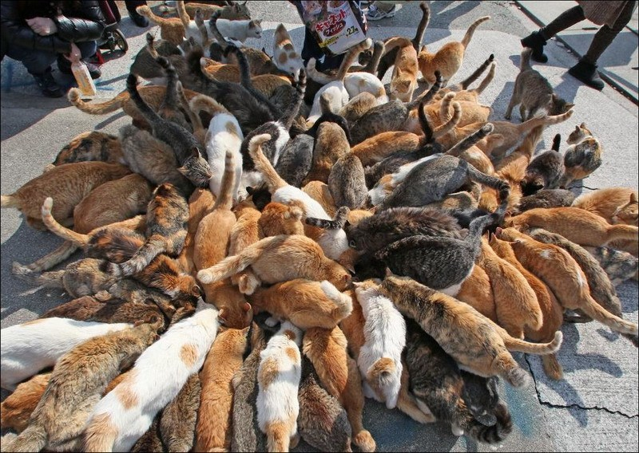
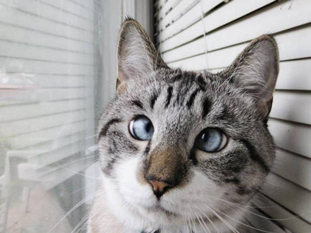
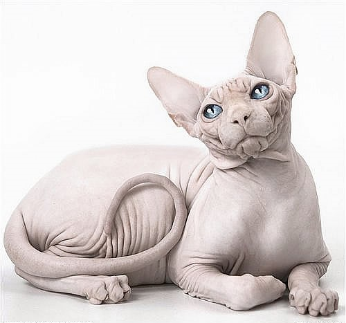

Цікаві факти про котів
Кішки живуть з нами не перше століття. Але не кожен із нас знає кішок досконально, особливо їх звички й особливості поведінки.
Майже 2/3 доби кішки витрачають на сон. Так, кіт, який прожив 9 років, 6 із них проспав. Більшість кішок є правшами, а більшість котів – лівшами. У світі живуть понад 500 млн домашніх котів. Сама "котяча" країна – це Австралія. Там на 10 осіб припадає 9 котів. Давньоєврейська легенда свідчить: у ковчезі Ноя розплодилися миші та пацюки, які знищували їжу. Ной почав молитися Богу, щоб той приструнив гризунів. Бог у відповідь на молитви змусив лева чхнути – і з пчиху лева з'явився кіт.
У даний час найбільшою кішкою вважають амурського тигра. Така кицька може досягати 3,5 м у довжину й важити понад 300 кг. У кішок кігті на передніх лапах гостріші, ніж на задніх. У спокійному стані всі кішки, крім гепарда, ховають кігті. Гепарди ж втягувати кігті не вміють. Кішки можуть повертати свої вуха на 180 градусів, адже їх зовнішнім вухом управляє аж 32 м'язи. Для порівняння - в людини таких м'язів всього 6. У тілі людини налічується 206 кісток, а в тілі кішки – 230, тому вони набагато пластичніші, ніж ми. Оскільки в кішок немає ключиць, вони цілком можуть пролазити в отвори, в які пролазить їхня голова.
З породи котячих, наші улюбленці єдині, хто при ходьбі тримають хвіст вертикально. Дикі кішки тримають хвіст горизантально або опущеним між ніг. За одну вагітність кішка може виносити кошенят від різних батьків. Але вважають, що всі кошенята будуть схожі на першого кота, з яким у кішки сталася злучка. Коли кішка настає, як нам здається, на всю поверхню лапки, насправді, вона спирається на пальці. Кішки розчепірюють пальці й перибирають лапками, коли отримують задоволення. Чим більше людина спілкується зі своєю улюбленицею, тим частіше кішка "відповідає", нявкаючи у відповідь.

Потапенко Олександр
Я дуже радий, що розповів вам про цих цікавих тварин. Я вважаю, що тварини – це наші друзі. У мене в квартирі живе кіт Барсик, ми всією сім’єю його дуже любимо. Коли він був маленьким, він був дуже жвавим, ми не могли за ним встежити. Зараз він виріс і став красивим, пухнастим котом. Колір шерсті у Барсика рудий, очі зелені. Я доглядаю за ним: годую його, граю з ним. Він любить точити кігті об наш диван, за що мама завжди кричить на Барсика, але потім вона заспокоюється і знову гладить його. А взагалі наш рудий друг слухняний. Я дуже люблю свого зеленоокого кота – Барсика, він частина моєї родини.